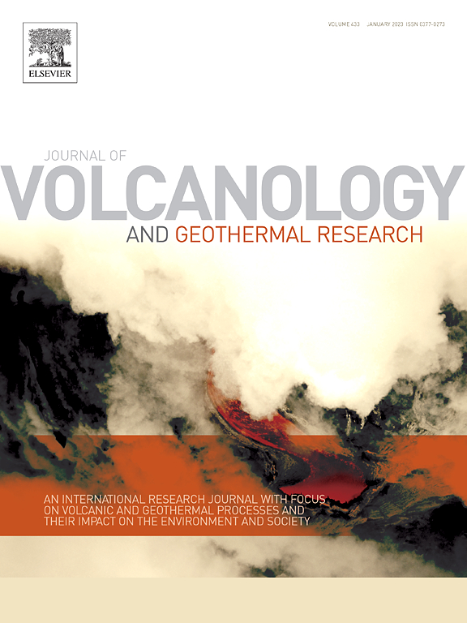

Bonjour à tous ! Les données acquises durant notre campagne de modélisation 3d au Vanuatu ont été analysées par Elodie et ont fait l'objet de non pas une, non pas deux, mais trois publications dans le Journal of Volcanology and Geothermal Research ! Il s'agit d'un joubal international de recherche, orienté vers les processus volcaniques et géothermaux ainsi que sur leurs conséquences sur l'environnement et les sociétés humaines.
Les articles complets sont téléchargeables ici :
A structural outline of the Yenkahe volcanic resurgent dome (Tanna Island, Vanuatu Arc, South Pacific)

Structure of an active volcano associated with a resurgent block inferred from thermal mapping : The Yasur–Yenkahe volcanic complex (Vanuatu)
Insights into the evolution of the Yenkahe resurgent dome (Siwi caldera, Tanna Island, Vanuatu) inferred from aerial high-resolution photogrammetry.
